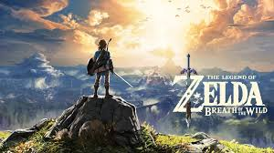
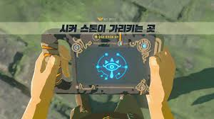
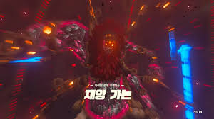
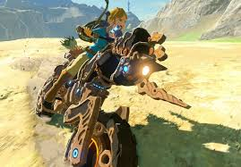
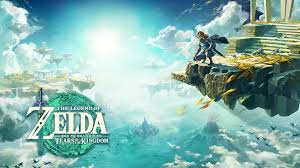

젤다의 전설 야생의 숨결은 닌텐도의 1인용 오픈월드 게임이다.게임 출시당시 많은 호평을 받으며 인기를 끌었다.

스토리
100년 전, 재앙 가논이 부활하여 하이랄 성을 덮쳤다. 각 종족을 대표하는 영걸들과 공주 젤다,주인공 링크가
가논을 물리치려 했지만 최종보스인 재앙 가논에게 패배했다.
이사건으로 인해 4명의 영걸들과 하이랄 국왕이 목숨을 잃게되고, 링크 또한 깊은 잠에 빠지게 된다.
그 후 젤다는 링크가 다시 하이랄 성을 구하러 올 때 까지 홀로 가논과 맞써 싸웠다. 그리고 100년이 지난 시점으로 링크는 회생의 사당에서 깨어나게 된다.
링크는 기억을 되찾으며 재앙 가논을 쓰러트리기 위한 모험을 시작한다.
게임 진행방식
플레이어는 주인공 링크를 조종하며 플레이한다.게임에 들어가면 한 목소리가 링크를 깨운다.처음에 링크는 회생의 사당이라는 곳에서 깨어난다.
이후 시커스톤이라는 아이템을 얻고 시작의 대지에서 플레이방법과 시커스톤의 능력을 연습한 뒤,시작의 대지를 떠난다.

(↑시커스톤 사진)
그 다음,카카리코 마을,하테노 마을등 많은 장소를 지나 4개의 신수를 클리어한다.
그 뒤 최종보스인 재앙 가논을 잡고 게임이 끝난다.

다른 오픈월드 게임과의 차이점
다른 오픈월드 게임은 게임적 한계가 있는 반면,젤다의 전설은 말그대로 자유롭다는 것이 장점이다.그 밖에도 그래픽,스토리까지 완벽에 가깝다.
DLC
DLC를 사면 마스터소드 강화 미션인 검의 시련,신수능력 강화와 바이크등 많은 혜택을 누릴 수 있다.

(↑ DLC로 얻을 수 있는 바이크)
후속작
[젤다의 전설 야생의 숨결]의 후속작으로 왕눈이라고 불리는 [젤다의 전설 왕국의 눈물]이 나왔다.후속작 또한 많은 인기를 끌었다.
